Case Study

A study project exploring alternative social media: an app where users post virtual, expiring notes to physical locations, readable only by visiting the spot in person.
Translating a modern UX into a deliberate pixel aesthetic without losing clarity or usability, while resisting the feature bloat common to social platforms.
Focused on a single core mechanic, then built a cohesive pixel design language around it: constrained palette, low-resolution grid, and a custom icon set that works at pixel scale.
A fully realised native app concept with a distinct visual identity, validated through user testing that confirmed the minimal feature set was the right call.
Background
»bust-a-bustle« is a social network built around one constraint: to read a post, you have to go visit the location of its origin. Users leave virtual notes pinned to real locations across the city. Each note expires after five days, borrowing from the transient nature of paper notes found on walls and lampposts. The project came out of a university brief asking a pointed question: what alternative forms of social media are actually conceivable? It was realized with two other designers: Mona Ruppert and Isabell Herzog. Three designers with no fixed roles. Everything was built together, from conceptualization to screen design and testing.
The explore map translates the user's real surroundings into a stylized grid, with notes pinned at their exact posted coordinates. The pinventory (right) archives every note collected over time — a personal map of places physically visited.
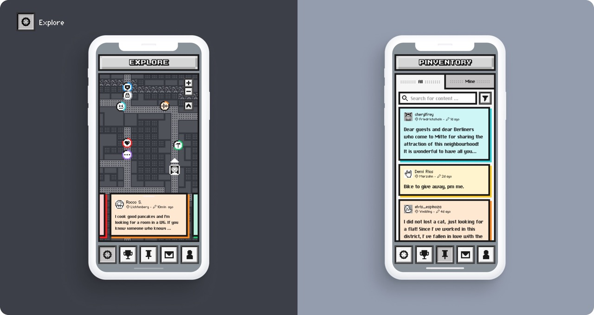
Problem
Two tensions shaped the project from the start. The first was visual: how do you translate a modern, functional UX — clear icons, legible hierarchy, touch-friendly interactions — into a pixel aesthetic without making it feel cryptic or nostalgic for its own sake? The second was conceptual: social apps tend to accumulate features. Staying minimal required active resistance to scope creep at every stage.
Notes are tagged to a category at the moment of posting. The same categories work in reverse as a search and filter layer, letting users browse what's nearby by type rather than scrolling through everything at once.
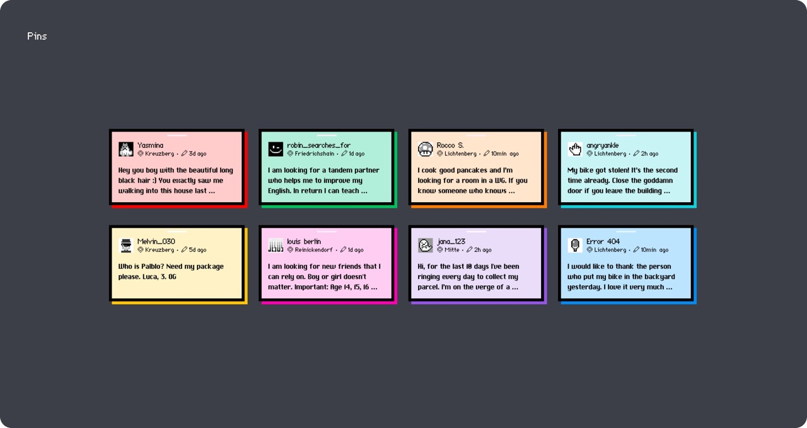
Approach
The design process started with research into pixel art conventions, to understand what made the aesthetic legible rather than just decorative: limited color palettes, low-resolution grids, characteristic pixelation. Icon design became a central challenge: Each icon had to read clearly at pixel scale while feeling visually consistent as a set. On the product side, every proposed feature was tested against the core mechanic. If it didn't serve the location-based note loop, it didn't make it in.
The pixel grid was a deliberate creative constraint: Every icon had to be legible at low resolution while reading as a coherent set. The restriction pushed the design toward clarity and gave the app its retro game character.
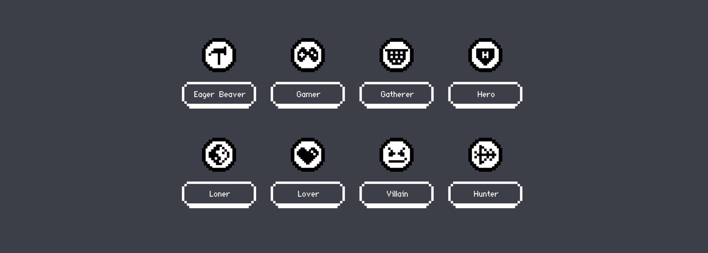
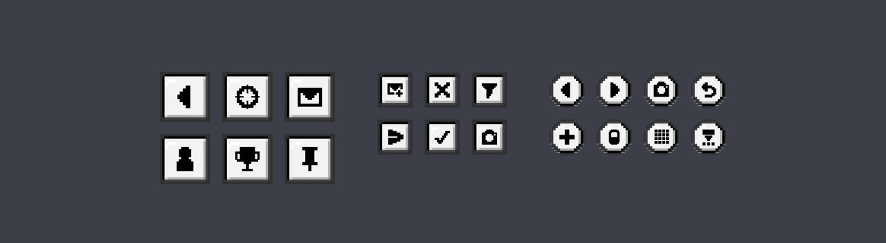
Workflow
The project ran from concept through to a fully detailed native app prototype. Work began with information architecture — navigation structure, screen hierarchy, user flow diagrams — before moving into visual design. The pixel design language was developed in parallel with the UI, so the aesthetic and the functional layer were built together rather than applied on top. User testing sessions ran throughout to pressure-test both the feature set and the visual legibility of the pixel icon system.
The inbox separates received messages from location notifications across two tabs. The pinventory below adds a search function for navigating a growing personal archive of collected notes.
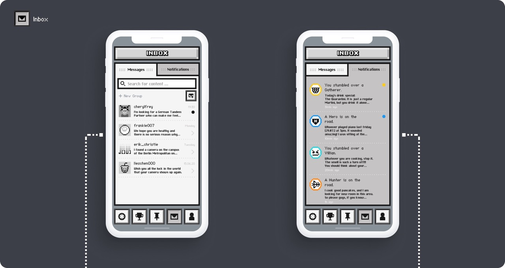
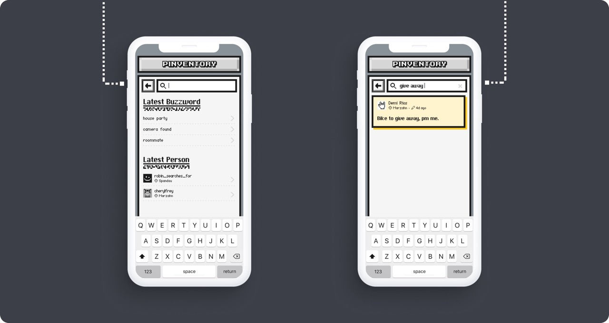
Outcome
User testing confirmed that the stripped-back feature set was the right call — participants responded well to the clarity of a single core mechanic. The app delivered on its brief: a social platform that feels genuinely different, grounded in a specific place and aesthetic. »bust-a-bustle« embodies the atmosphere of a bustling city: layered, transient, a little eccentric, without overstating it. The pixel design system, from icons to UI components, holds together as a coherent visual language.
Opening a note from the pinventory reveals its full content alongside its place context. The filter screen lets users narrow by category or location — useful once the map fills up and browsing becomes impractical.
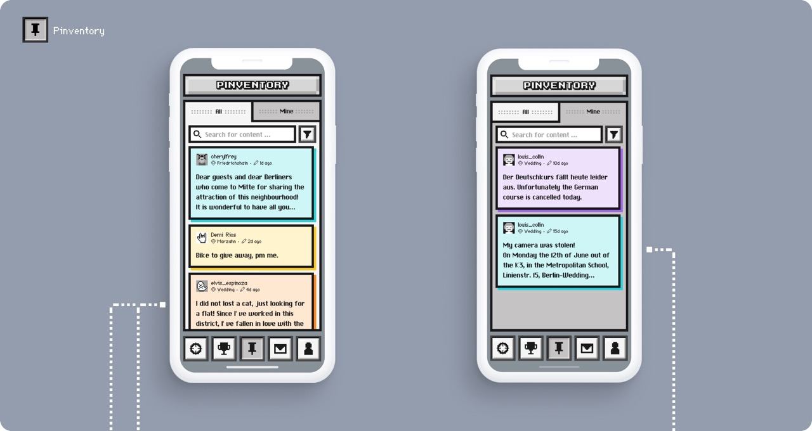
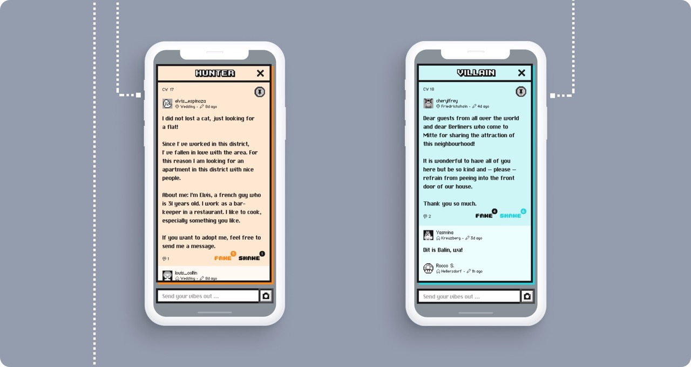
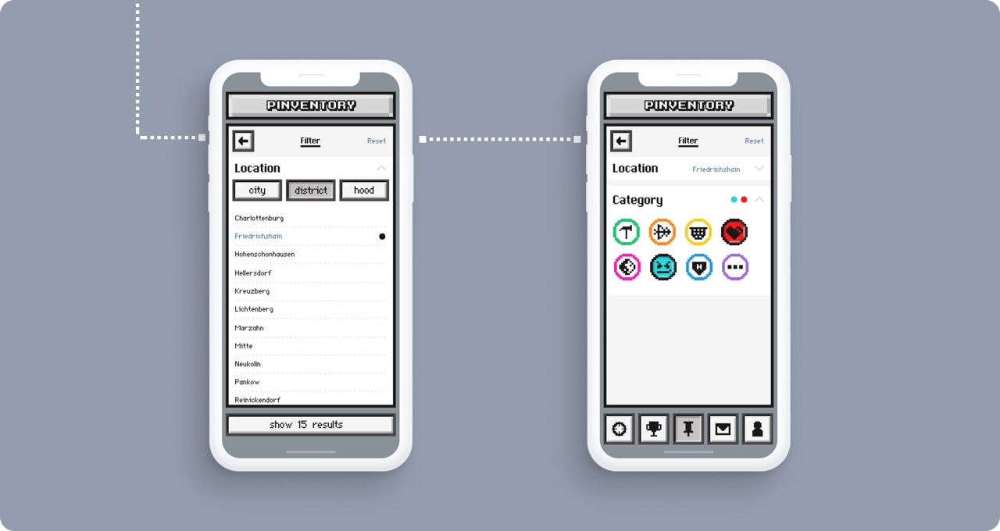
Walk of Fame and Walk of Shame surface the highest-voted notes in both directions. Because posts expire after five days, the ranking turns over constantly — there's no permanent top, just what's resonating right now.
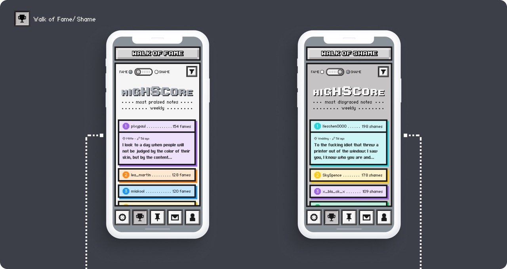
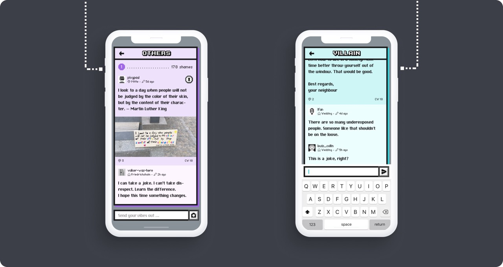
The Avatar Lab lets users build a pixel profile picture from scratch, keeping the retro aesthetic consistent all the way through to the personal layer of the app.
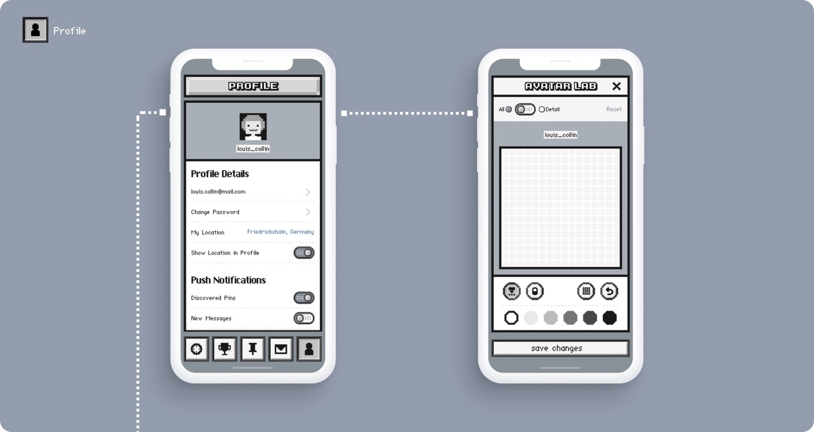
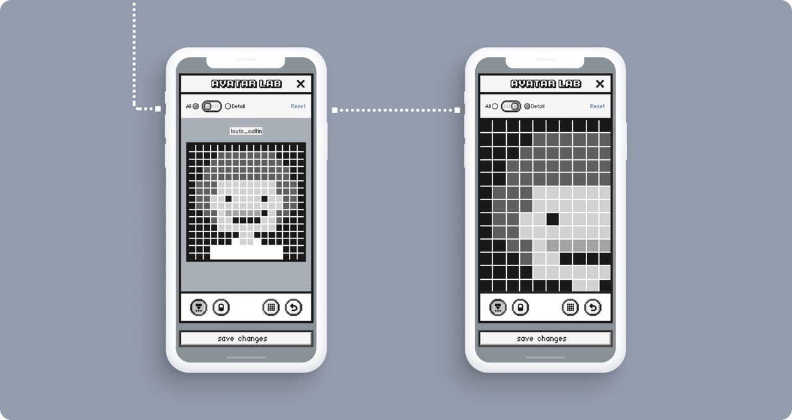